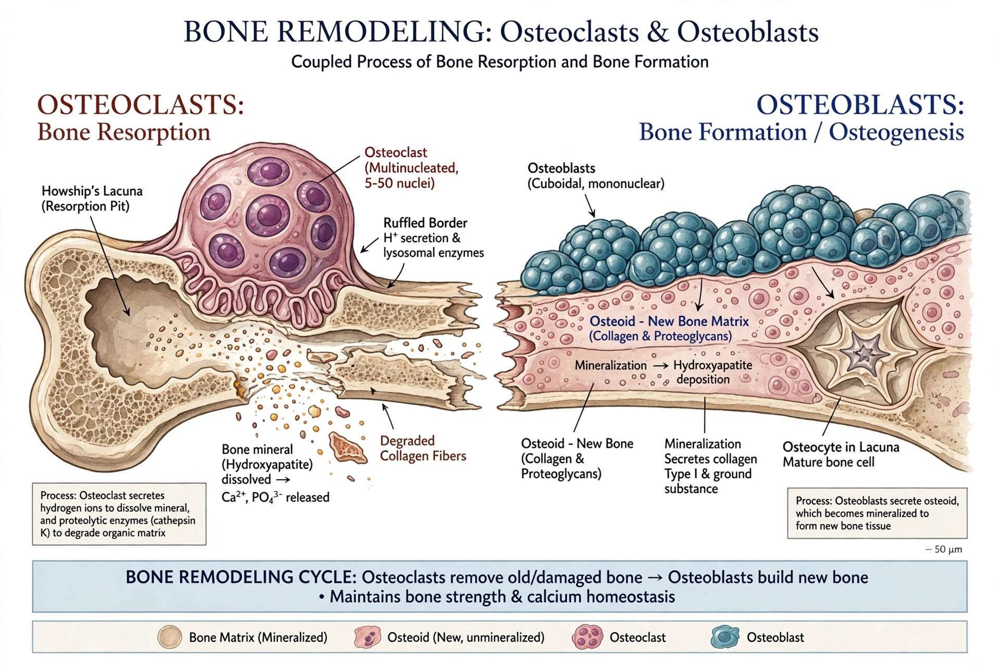

Bone remodeling
Bone remodeling (or bone metabolism) is a lifelong process where mature bone tissue is removed from the skeleton (a process called bone resorption) and new bone tissue is formed (a process called ossification or new bone synthesis). These two processes also control the reshaping or replacement of bone following injuries like fractures but also micro-damage, which occurs during normal activity. In the first year of life, almost 100% of the skeleton is replaced; in adults, remodeling proceeds at about 10% per year.
 | |
| Cell types | Osteoclasts, osteoblasts, osteocytes |
|---|---|
| Phases | Activation, resorption, reversal, formation, mineralisation |
| Key signals | RANKL/RANK/OPG, PTH, sclerostin, oestrogen |
Physiology
Remodeling is carried out by the basic multicellular unit (BMU), a temporary team of cells that works at a single site over several months. Osteoclasts — large multinucleated cells of haematopoietic origin — seal onto the bone surface and secrete acid and enzymes (notably cathepsin K) to dissolve mineral and matrix, excavating a resorption cavity (Howship's lacuna) over about two to four weeks. After a reversal phase, osteoblasts of mesenchymal origin deposit unmineralised matrix (osteoid), which then mineralises with hydroxyapatite over the following months. Some osteoblasts become entombed as osteocytes, the mechanosensory network that directs the whole process.
Regulation
The RANK/RANKL/osteoprotegerin (OPG) axis is the central local control: osteoblast-lineage cells and osteocytes express RANKL, which activates osteoclast formation, while OPG acts as a decoy receptor that inhibits it. Systemic hormones tune the balance — parathyroid hormone (continuously elevated: net resorption; intermittently dosed: anabolic), oestrogen (deficiency after menopause accelerates resorption), calcitonin, vitamin D and glucocorticoids. Mechanical loading, sensed by osteocytes via sclerostin secretion, adapts bone mass to use — the basis of Wolff's law.
Clinical significance
An imbalance in which resorption exceeds formation causes loss of bone mass and microarchitectural deterioration — osteoporosis — predisposing to fragility fractures. Excess resorption also features in Paget's disease of bone and in bone metastases. Antiresorptive drugs (bisphosphonates; the anti-RANKL antibody denosumab) and anabolic agents (teriparatide, abaloparatide, the anti-sclerostin antibody romosozumab) work by manipulating the remodeling cycle. Bone turnover markers such as CTX and P1NP are used in monitoring.
See also
Categories: Bone physiology · Skeletal system · Orthopedics